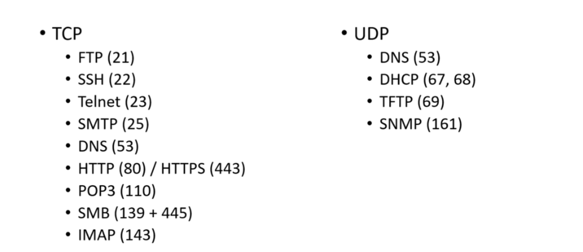

Common Ports

FTP - file transfer protocol, used in taking a file from the server.
SSH and Telnet - remote logging to the computer, ssh is encrypted, telnet is on clear text.
SMTP, POP3, IMAP - all relates to sending mails, or mailing in general.
DNS - a way to resolve ip address to names, like google hacing an ip of 127****, just to make it more readable
HTTP/HTTPS -. websites, https is encrypted, http is encrypted.
SMB- or samba, relates to file shares.
DHCP- an opposite of static ip address. This generates a random ip when connected to the internet.
TFTP - trivial file transfer protocol
SNMP- simple network mangement protocol